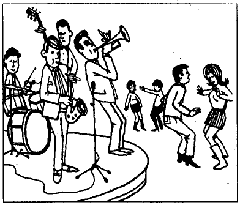

Survival English – Exercise 9
Jazz Music · Note completion · 12 questions
Student information
Audio
Listen to the conversation and fill in the missing information in the notes below.

Around 1900, people from many countries lived in New Orleans. 1. was an important part of life in this city. Musicians in New Orleans started to play a different kind of music. It was called 2. . Most early jazz musicians were 3. . They played in small bands and they didn’t write down their music. They learned to work together to produce a loose and 4. that was so powerful that listeners could not help but dance, or at least move their feet along with the music. Soon 5. were playing jazz too.Around 1920, jazz music began to 6. . Jazz musicians moved from city to city. People listened to jazz records. They heard jazz on the radio. In the 7. , jazz was popular in the U.S. and Canada. The music was called 8. . It was played by big bands. Now, there are still a few bands made up of 9. playing the old-style jazz in a club in New Orleans. They play jazz for 10. each evening so many tourists go there. The audience can make some 11. for the songs, but they should pay a little 12. for the request.
A: Hi, Mike. Do you like jazz?
A: Chào Mike. Bạn có thích nhạc jazz không?
B: Yes, very much. And I like to dance to jazz too.
B: Có, rất thích. Và mình cũng thích nhảy theo nhạc jazz.
A: Do you know who first started to play jazz?
A: Bạn có biết ai là những người đầu tiên chơi nhạc jazz không?
B: Yes, of course. The African Americans.
B: Tất nhiên rồi. Đó là người Mỹ gốc Phi.
A: Do you know when and where?
A: Bạn có biết vào khi nào và ở đâu không?
B: Yes. Around 1900, people from many countries lived in New Orleans. Music was an important part of life (Question 1) in this city. Musicians in New Orleans started to play a new kind of music. It was called jazz (Question 2). Jazz was a kind of music intended to make people happy.
B: Có. Khoảng năm 1900, người từ nhiều quốc gia sinh sống ở New Orleans. Âm nhạc là một phần quan trọng trong đời sống (Câu 1) của thành phố này. Các nhạc công ở New Orleans bắt đầu chơi một loại nhạc mới. Nó được gọi là nhạc jazz (Câu 2). Jazz là loại nhạc nhằm mang lại niềm vui cho mọi người.
A: I know jazz is kind of a mixture of many different kinds of music, for example, African, blues, European, church music, and work songs. Most early jazz musicians were African American (Question 3). They played in small bands and they didn’t write down their music.
A: Mình biết jazz là sự pha trộn của nhiều thể loại âm nhạc khác nhau, chẳng hạn âm nhạc châu Phi, blues, châu Âu, nhạc nhà thờ và những bài hát lao động. Hầu hết những nhạc công jazz thời kỳ đầu là người Mỹ gốc Phi (Câu 3). Họ biểu diễn trong các ban nhạc nhỏ và không ghi chép lại bản nhạc.
B: Yes, they learned to work together to produce a loose and relaxed beat (Question 4) that was so powerful that listeners could not help but dance, or at least move their feet along with it. And soon white musicians were playing jazz too (Question 5).
B: Đúng vậy, họ học cách phối hợp với nhau để tạo ra một nhịp điệu tự do và thư thái (Câu 4) mạnh mẽ đến mức người nghe không thể không nhảy hoặc ít nhất là nhịp chân theo nhạc. Và chẳng bao lâu sau, các nhạc công da trắng cũng bắt đầu chơi jazz (Câu 5).
A: I know black and white musicians seldom played together in the United States at that time.
A: Mình biết vào thời đó, các nhạc công da đen và da trắng hiếm khi biểu diễn cùng nhau ở Hoa Kỳ.
B: You are right. Around 1920, jazz music began to spread (Question 6). Jazz musicians moved from city to city. People listened to jazz records. They heard jazz on the radio. In the 1930s and 1940s (Question 7), jazz was popular in the U.S. and Canada. The music was called swing (Question 8). It was played by big bands.
B: Bạn nói đúng. Khoảng năm 1920, nhạc jazz bắt đầu lan rộng (Câu 6). Các nhạc công jazz đi từ thành phố này sang thành phố khác. Mọi người nghe những đĩa nhạc jazz và nghe jazz trên đài phát thanh. Vào những năm 1930 và 1940 (Câu 7), jazz phổ biến ở Hoa Kỳ và Canada. Loại nhạc này được gọi là swing (Câu 8) và được biểu diễn bởi các ban nhạc lớn.
A: It was said there are still a few bands made up of very old musicians (Question 9) playing the old-style jazz in a club in New Orleans. They play jazz for four and a half hours each evening (Question 10) so many tourists go there and listen.
A: Người ta nói rằng vẫn còn một vài ban nhạc gồm những nhạc công rất lớn tuổi (Câu 9) chơi nhạc jazz kiểu cũ tại một câu lạc bộ ở New Orleans. Họ chơi nhạc jazz bốn tiếng rưỡi mỗi tối (Câu 10) nên nhiều du khách đến đó nghe.
B: Can the audience make some special requests for the songs (Question 11)?
B: Khán giả có thể đưa ra những yêu cầu đặc biệt về bài hát (Câu 11) không?
A: Yes, if the musicians are willing to play them, people pay a little money for the request (Question 12). Traditional songs cost one dollar and all others cost two.
A: Có, nếu các nhạc công sẵn lòng chơi những bài đó, mọi người sẽ trả một ít tiền cho yêu cầu của mình (Câu 12). Các bài hát truyền thống có giá một đô la, còn các bài khác có giá hai đô la.
B: That’s interesting. I’d like to visit the city sometime in the future.
B: Thú vị thật. Mình muốn có dịp đến thăm thành phố đó trong tương lai.